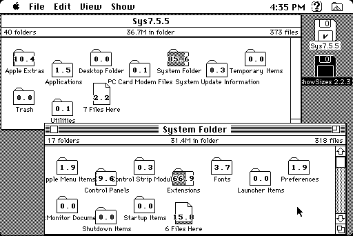

Download
showsizes2.23.zip (115K) ShowSizes 2.2.3 repackaged into a zipped hfs disk image and checksum file. The disk image can be mounted with Mini vMac.
showsizes2.23.sit.hqx (156K) ShowSizes 2.2.3 in the original format.
copyright: John Pugh
mod date: Jan 19, 1994
license: shareware
"ShowSizes allows you to determine where all the space on your hard disk went", by displaying "each folder with a bar chart and text displaying the percentage it and its descendants occupy."

If you find these downloads useful, please consider helping the Gryphel Project, which hosts them.
Here are the md5 checksums for the downloads, signed with Gryphel Key 5:
--------- GRY SIGNED TEXT --------- bda60144cae274a595cf60a490f1b3ed showsizes2.23.zip b76d16867be21f03feee44868b917804 showsizes2.23.sit.hqx ------- BEGIN GRY SIGNATURE ------- Gry/4Xa8CFcUzxdN/Pvtpbu2llFR7cl48ahV2CJ7sYz8ySSDMUrrjrsOdrH3Hreo 2gtc/AJZpklfLx2y5mmp9NXrcP3U41leRstlGe2j3U9fwStZ3IBI2R44hM9qyVlk vyhP1Ox3ieFNl0SrVHb8pIpqu5qflQolJeMfBTxsc3JvtBQRusd3Pq7Uw4G6Dabb -------- END GRY SIGNATURE --------